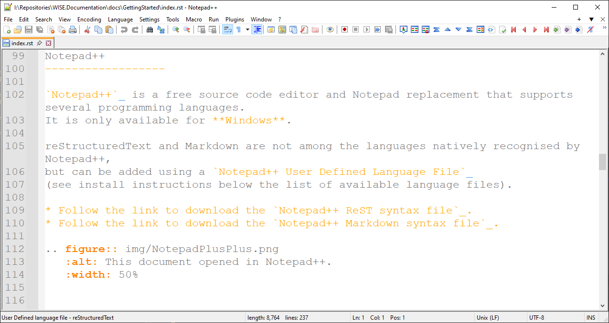
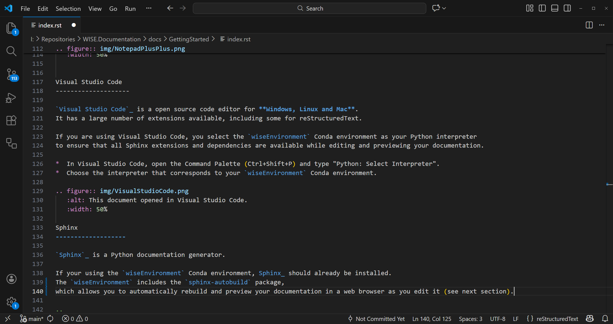

Writing the documentation#
We use Sphinx for documentation.
You can write the docs in reStructuredText (reST) format, which is a simple and powerful markup language. You can also write the docs in Markdown format using MyST parser, which is compatible with Sphinx.
Files with the .rst extension are processed as reStructuredText. Files with the .md extension are processed as Markdown.
You can choose the format that best suits your needs and preferences.
If you are a developer working on WISE documentation, you can use sphinx-autodoc2 for automatic docstring generation.
All you need is Notepad++ or any text editor of your choice to create and edit the documentation files.
You can also use Visual Studio Code for a more feature-rich experience.
You you already have documentation in other formats, you may convert it using Pandoc.
Notepad++#
Notepad++ is a free source code editor and Notepad replacement that supports several programming languages. It is only available for Windows.
reStructuredText and Markdown are not among the languages natively recognised by Notepad++, but can be added using the Notepad++ User Defined Languages Collection.
Follow the link to download the Notepad++ ReST syntax file.
Follow the link to download the Notepad++ Markdown syntax file.
{kind=link}

Visual Studio Code#
Visual Studio Code is a open source code editor for Windows, Linux and Mac. It has a large number of extensions available:
Python extension for Visual Studio Code (ms-python.python): required
MyST Syntax Highlighting (chrisjsewell.myst-tml-syntax): recommended if you are using Markdown
markdownlint (DavidAnson.vscode-markdownlint): useful if you are using Markdown (but you may need to configure and disable some options)
reStructuredText Syntax highlighting (trond-snekvik.simple-rst): useful if you are using reStructuredText
Mermaid (MermaidChart.vscode-mermaid-chart): recommended if you are using Mermaid diagrams
Code Spell Checker (streetsidesoftware.code-spell-checker): recommended as a spell checker
Anyway… you just need the Python extension:
Activate wiseEnvironment Conda environment as your Python environment to ensure that all Sphinx extensions and dependencies are available while editing and previewing your documentation.
In Visual Studio Code, open the Command Palette (Ctrl+Shift+P) and type “Python: Select Interpreter”. Choose the interpreter that corresponds to your wiseEnvironment Conda environment. If you don’t remember were the python.exe file is, check the location of your environment using a terminal window and:
conda env list
If you are using a git repository, add the .vscode folder to your .gitignore file.
{kind=link}

Pandoc#
Pandoc is a free and open-source document converter, available for Windows, Linux and Mac.
It can convert files in formats such as HTML, PDF, DOCX, ODT, etc. to and from reStructuredText and Markdown (including the CommonMark flavour supported by Sphinx and GitHub).
You can use it to convert existing documents to *.rst or *.md format, before editing them with a text or code editor (e.g. Notepad++, Visual Studio Code).
pandoc --from=docx --to=rst --output=myfile.rst --extract-media=img myfile.docx
Refer to https://pandoc.org/MANUAL.html for a full list of options (besides the ones listed below).
--from=FORMATInput format.
commonmark(CommonMark Markdown)docx(Word docx)rst(reStructuredText)
--to=FORMATOutput format
commonmark(CommonMark Markdown)docx(Word docx)rst(reStructuredText)pdf(PDF)
--output=FILEWrite output to FILE.
--defaults=FILESpecify a set of default option settings. FILE is a YAML or JSON file whose fields correspond to command-line option settings. All options for document conversion, including input and output files, can be set using a defaults file.
--fail-if-warnings[=true|false]Exit with error status if there are any warnings.
--shift-heading-level-by=NUMBERShift heading levels by a positive or negative integer. For example, with –shift-heading-level-by=-1, level 2 headings become level 1 headings, and level 3 headings become level 2 headings. Headings cannot have a level less than 1, so a heading that would be shifted below level 1 becomes a regular paragraph.
--extract-media=DIR|FILE.zipExtract images and other media contained in or linked from the source document to the path DIR, creating it if necessary, and adjust the images references in the document so they point to the extracted files.
--template=FILE|URLUse the specified file as a custom template for the generated document. Implies –standalone.
--table-of-contents[=true|false]Include an automatically generated table of contents (or, in the case of latex, docx, and rst, an instruction to create one) in the output document.
--toc-depth=NUMBERSpecify the number of section levels to include in the table of contents. The default is 3 (which means that level-1, 2, and 3 headings will be listed in the contents).
--list-of-figures[=true|false]Include an automatically generated list of figures (or, in some formats, an instruction to create one) in the output document. This option only has an effect on latex, and docx output.
--list-of-tables[=true|false]Include an automatically generated list of tables (or, in some formats, an instruction to create one) in the output document. This option only has an effect on latex, and docx output.
--reference-links[=true|false]Use reference-style links, rather than inline links, in writing Markdown or reStructuredText. By default inline links are used. The placement of link references is affected by the –reference-location option.
--reference-location=block|section|documentSpecify whether footnotes (and references, if reference-links is set) are placed at the end of the current (top-level) block, the current section, or the document. The default is document.
--figure-caption-position=above|belowSpecify whether figure captions go above or below figures (default is below). This option only affects HTML, LaTeX, Docx and ODT output.
--table-caption-position=above|belowSpecify whether figure captions go above or below figures (default is above). This option only affects HTML, LaTeX, Docx and ODT output.
--markdown-headings=setext|atxSpecify whether to use ATX-style (#-prefixed) or Setext-style (underlined) headings for level 1 and 2 headings in Markdown output. (The default is atx.) ATX-style headings are always used for levels 3+.
--list-tables[=true|false]Render tables as list tables in RST output.